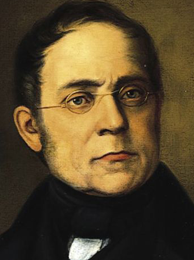

Carl Czerny was an Austrian composer, teacher, and pianist of Czech origin whose vast musical production amounted to over a thousand works. His books of studies for the piano are still widely used in piano teaching.
Close